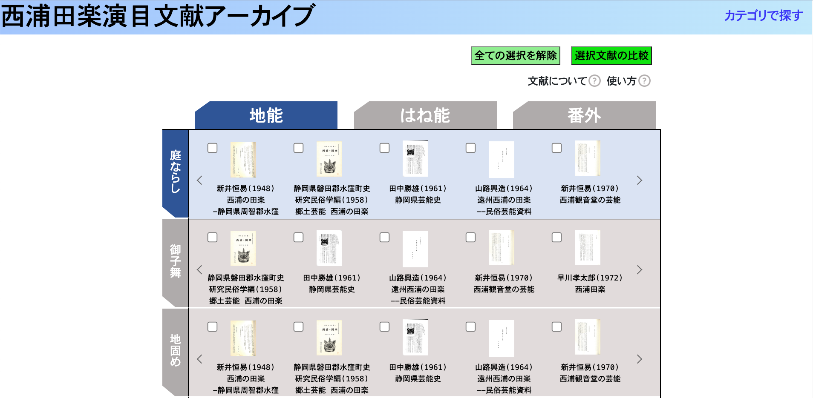
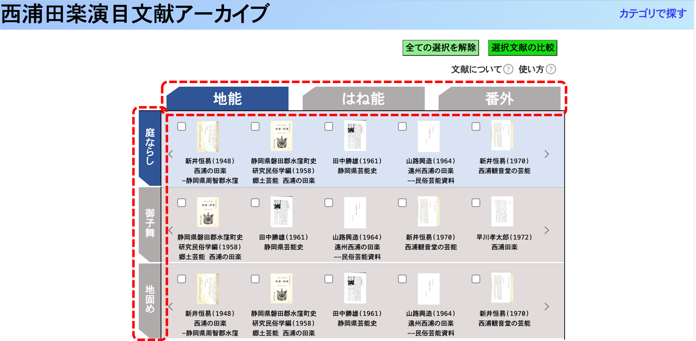
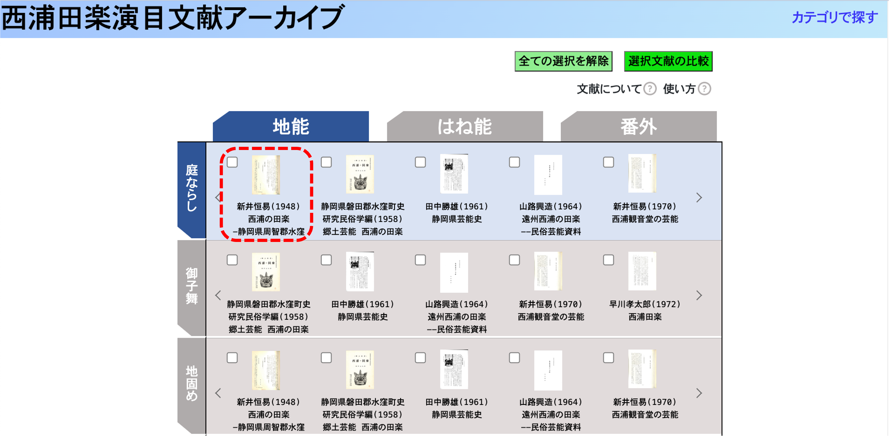
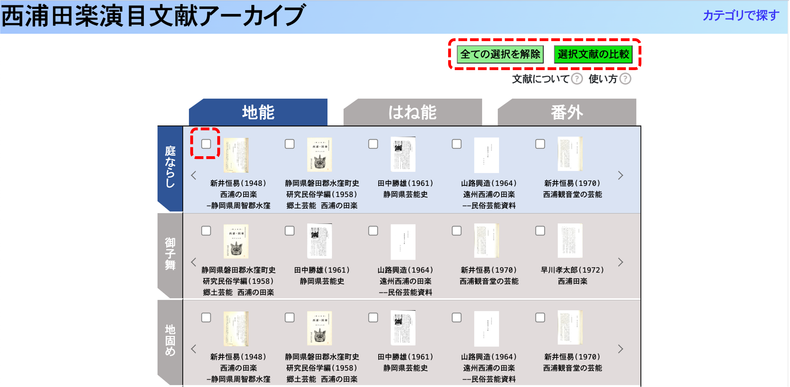
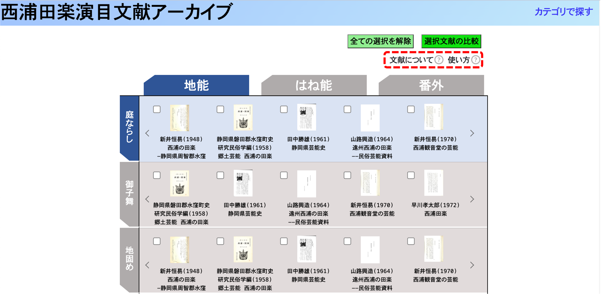

西浦田楽演目文献アーカイブへようこそ
本デジタルアーカイブでは、西浦田楽の演目に関する記述がされている文献を
演目や著者、道具/衣装をもとに検索することができます
また、複数の文献を最大４つまで比較しながら閲覧することができます

トップページの使い方１
タブをクリックすると、演目種別(地能・はね能・番外)と
演目(庭ならし、御子舞・・・)を切り替えることができます

トップページの使い方２
文献のサムネイルをクリックすると、文献を閲覧するページに移動します

トップページの使い方３
文献のサムネイル左上のチェックボックスにチェックを入れて「選択文献の比較」ボタンをクリックすると、チェックした文献を比較しながら閲覧できます
また、「すべての選択を解除」ボタンをクリックすると、チェックボックスの
チェックをまとめて外すことができます

トップページの使い方４
「文献について」をクリックすると、本デジタルアーカイブで閲覧のできる
文献の一覧と、各文献の基本情報を見ることができます
また、「使い方」をクリックすると、本説名画面を再度見ることができます
